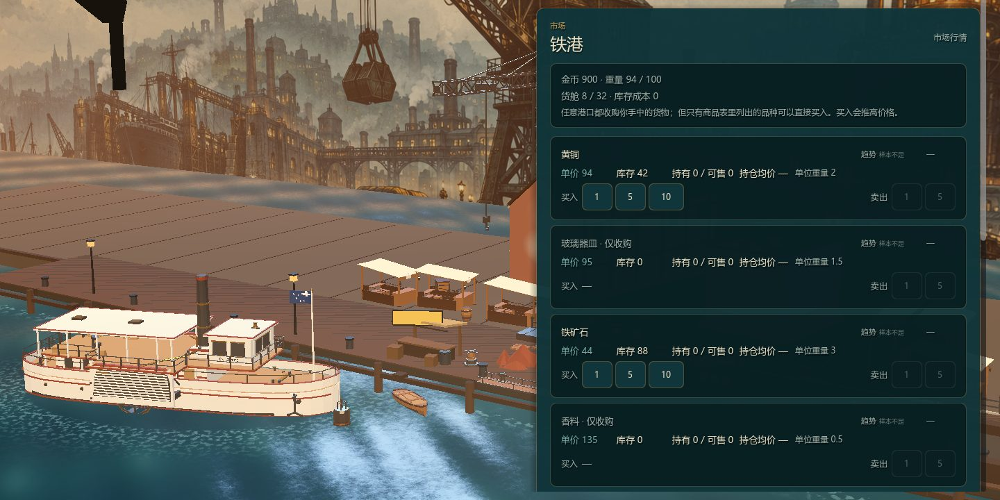
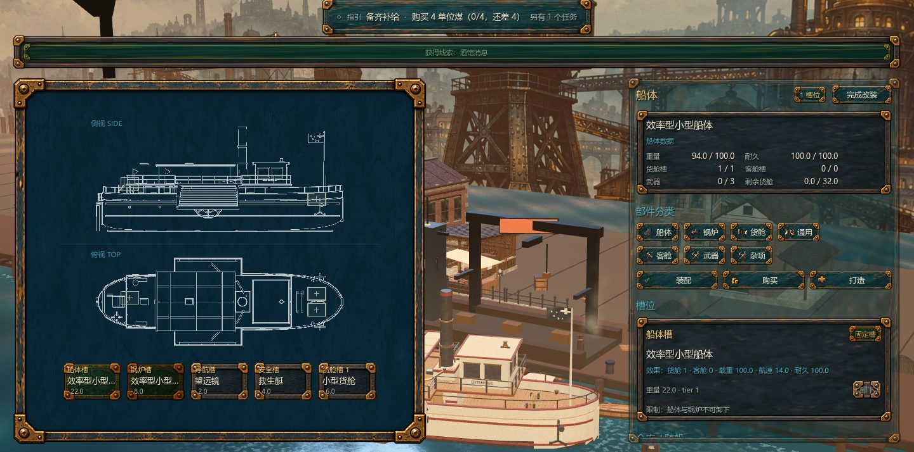
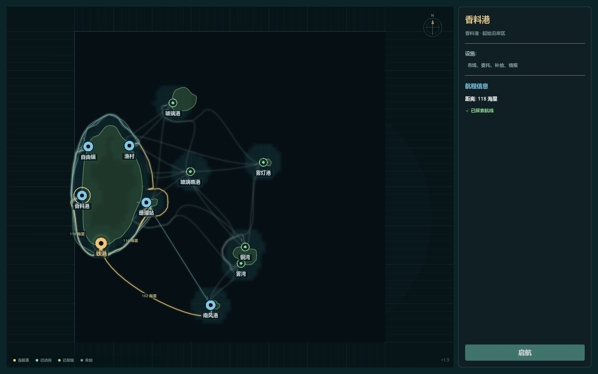
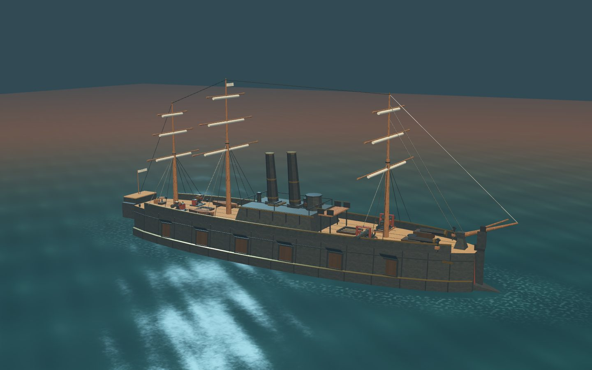
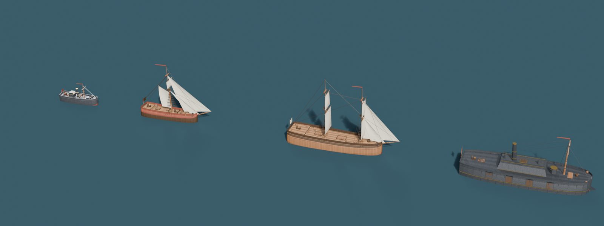
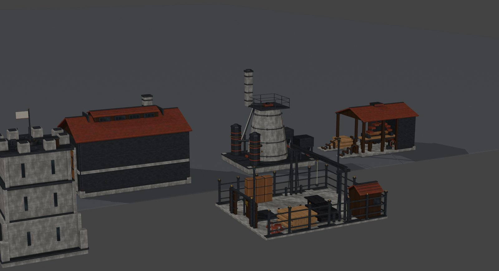
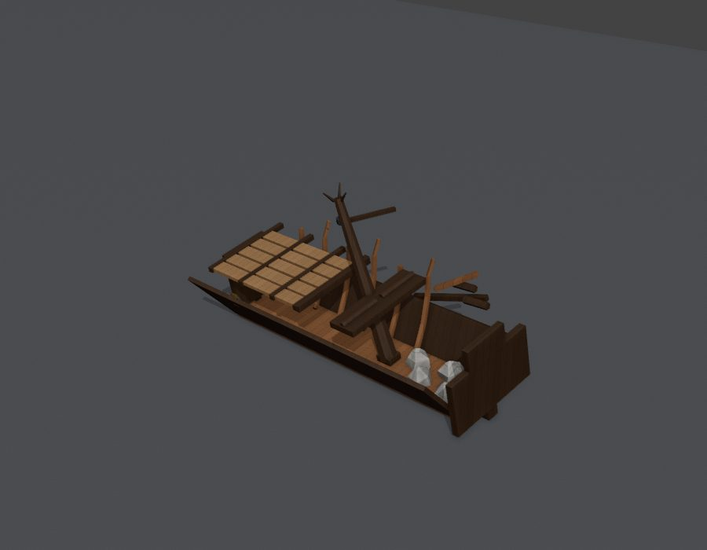

看行情
比较港口价差、库存和趋势，决定这趟装什么、去哪里。
ABOUT THE GAME
一款以蒸汽朋克群岛为背景的航海贸易模拟。经营港口贸易、改装船只，并探索未知海域。
THE STEAM AGE
在蒸汽纪元，群岛之间的航路连接着不同港口与势力。玩家从一艘旧船起步，靠贸易、委托和探索积累资金。
开局时只有一艘旧船和少量补给。先备好煤与水，再查看行情和委托，决定第一趟航线。煤和淡水决定了你能走多远。
之后可以继续跑贸易、改装船只、探索线索，也会遇到风险与战斗。游戏没有固定剧情线，进度由委托、交易和探索推进。
THE LOOP
从查看行情到交付委托，每次循环都会带来资金、货物和船只上的变化。
比较港口价差、库存和趋势，决定这趟装什么、去哪里。
煤与水决定航程，载重决定利润。锅炉策略会同时改变速度与消耗。
选择航线并承担风险，处理途中的锅炉故障、迷雾和敌对船只。
交付委托、修船、改装，并打听下一段航路。
WHAT YOU DO

TRADE
港口库存和价格会变化，其他商船也会买卖。你的交易会推动价格，因此买入和卖出都要留出余地。

SHIPYARD
四类船体、锅炉、货舱、导航、安全与客舱模块，再加上按安装点分类的舰载武器。槽位、载重、耐久与价格，决定了你的船最终长成什么样。

CHART
群岛与航路由程序生成，迷雾遮住尚未抵达的海域。线索会分级揭示方向、航程与风险；循线索出航，可能发现新港口，也可能在资源告急时掉头。

COMBAT & FLEET
从甲板速射炮到重型舰炮、臼炮与侧舷炮列，不同武器有各自的射程、装填与伤害类型。海盗、炮艇与铁甲袭击者会采取不同的战术。



OUTPOST & RUINS
在海岸前哨建造锯木厂、冶炼炉与铸造车间，把原料变成木材、锅炉钢板与精密齿轮；也可以带着一支远征队进入沉没大厅，在坍塌与积水的遗迹中寻找遗物。
PORTS
每座港口有不同的大小、设施与商品偏好。出发前可以先记下它们能提供什么。
工业港口，拥有造船厂，铁矿石与钢板供应充足。吊臂和烟囱昼夜不停。
香料贸易繁荣，酒馆里能打听到行情与线索。空气里混着胡椒与海盐的气味。
设施齐全的中立贸易港，造船厂与酒馆并存。任何商船都可以在这里补给和交易。
木材与铁矿便宜，但设施有限。适合补给和采购低价材料。
玻璃器皿的产地，酒馆里流通着行情与线索。货物易碎，但利润可观。
FACTIONS
商会、海军与海盗团各有自己的活动范围与立场。航行时可能会遇到它们。
控制香料、纺织品与玻璃器皿贸易的沿海商会。和他们做生意最省心，也最容易被算清每一笔利润。
巡逻工业带与海岸航线的正规舰队，重视秩序。只要你不越线，他们是航道上最可靠的安全保障。
盘踞外海与群岛的亡命之徒，与商会和海军敌对。遭遇时通常需要交战或撤离。